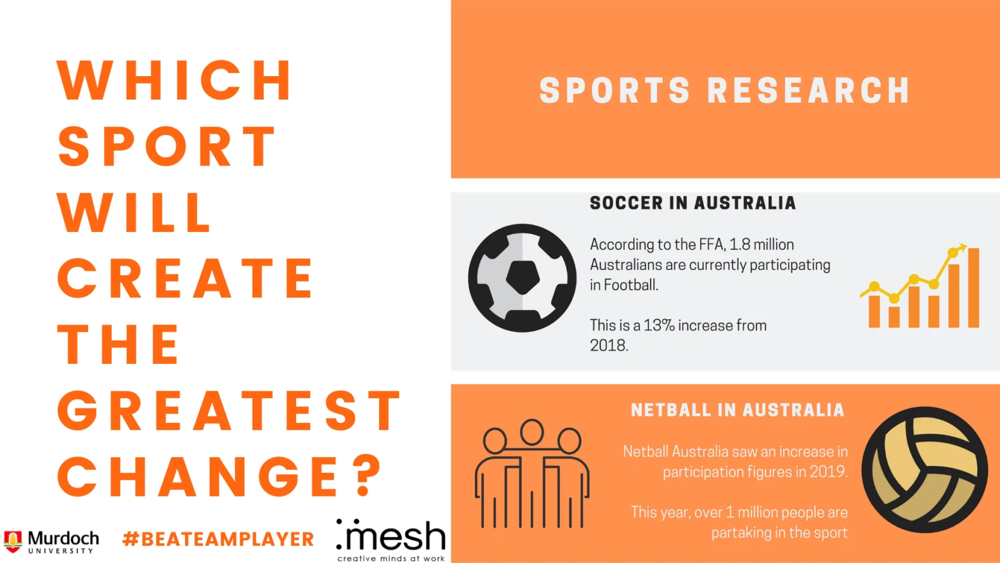
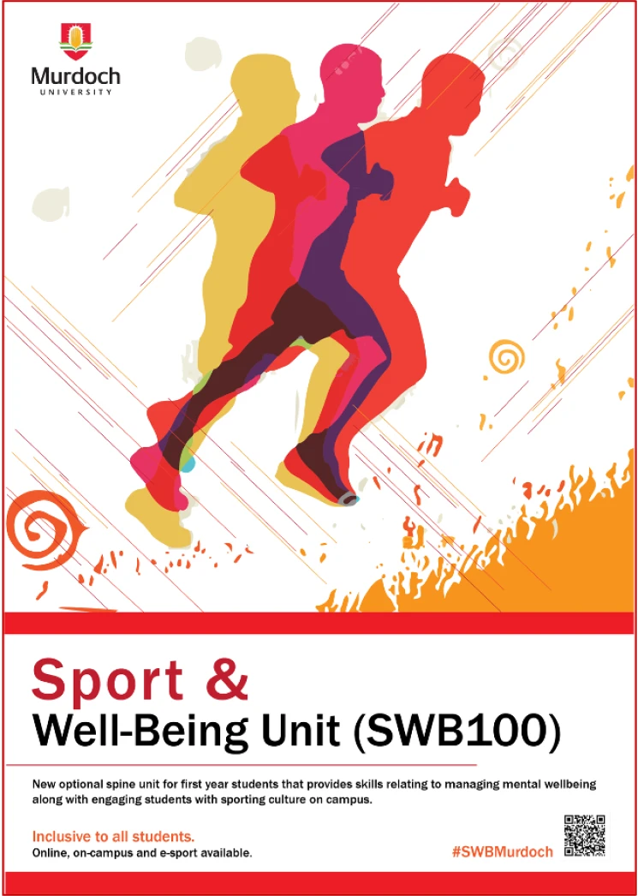

History of the Communication Collective
Formerly PURE, The Communication Collective was founded in 2018. The intention behind the Communication Collective was to create a platform for student networking and foster a greater connection between peers. With our new re-launch strategy we want to provide building connections between like-minded peers as well as allowing members to connect with industry professionals. The Communication Collective is open to welcoming new members and hosting many different events. So if you're interested in joining write us an e-mail or simply come to one of our events and see for yourself.
What We Do
Class Work
Members of the Collective have worked on a range of diverse projects during their studies.
Valuing Children Initiative
Strategic Communications
The COM307 work-integrated learning unit was tasked with a project for the Valuing Children Initiative. The brief was to change the way West Australians value children using sport. Innovative ideas were developed for different target audiences, including pre-natal and newborns (0-4 years old), children (5-14 years old), teenagers (15-19), and young adults (20-24 years old).
Murdoch Sports
Strategic Communications
As part of the work-integrated learning unit, COM307, students were asked to develop a campaign for the client Murdoch Sports. The brief was to help the Murdoch Sports department to become accredited as a FISU Healthy Campus and establish a higher health and wellness culture on Murdoch Universities campus.
Student Testimonials
What our members and alumni have to say
Georgia Earnshaw
Digital Media Adviser
Department of the Premier and Cabinet
"I had the opportunity to work with real clients right from the start of this strategic communications course, which gave me extensive practical experience and an understanding of the job opportunities this course would lead to. The assignments are incredibly practical, and perfectly reflect the realities of strategic communications in the workforce.
Keely Lambert
Marketing Officer
Cockburn ARC
"Through incredibly supportive lecturers and academics, I was equipped with the skills and confidence to take on opportunities outside of the classroom. Working alongside real clients on real projects provided me the edge necessary to be competitive to land a dream graduate marketing role.
Lynsey Brady
Specialist Communications & Engagement
Rio Tinto Iron Ore
"The strategic communications program provided me with the practical skills and knowledge to confidently kick start a rewarding and fulfilling career.
Laura McLean
Senior Consultant
Cannings Purple
" This course laid the perfect foundations for my career in communications. The opportunity to understand the theory behind topics like crisis management, content creation and strategic planning, paired with the practical experience from the workplace learning program allowed me to transition from uni to the industry with ease.
Sameera Afzaal
Digital Communications Officer
Public Transport Authority
" The strategic communications course provided relevant foundations for tactical decision-making in the ever-evolving field of marketing. I still apply these strategies to a diverse range of clients many years later
Stephanie Dawson
Media and Communications Officer
Murdoch University
"From practical assessments to real-world clients to internships, the strategic communications course offers so much experience and builds the essential skills you'll need in any communications job, no matter where you work. Topics like crisis communication, stakeholder consultation, media liaison and interviewing, and the importance of social media have been so incredibly helpful in my role. The course broadened my skillset and experience so I can find job opportunities in many different areas
Anthony Deceglie
Editor in Chief
West Australian Newspaper at Seven West Media
" We are really proud of the students that have come from Murdoch University and they have quickly risen up the ranks of our newsroom in senior roles. Some of them are journalists looking after entire suburban newspapers and some of them are running our website at night on their own.
Eamon Holley
Celebrity Producer
British GQ, Vogue, Conde Nast Publications
" The Strategic Communications course provided the ability to develop skills and the critical insights necessary to navigate and adapt to the ever-evolving media landscape. With incredible facility support and invaluable practical experience, the versatility of the course content has allowed me to work across a range of fields including corporate agency, television, publishing and events on an international scale
Indigo Lemay-Conway
Journalist and Music Reviewer
The West Australian and PerthNow
" Journalism as a career was one of the best moves I ever made. If you are going to study journalism at Murdoch University, just go in with an open mind, because this degree opens doors that you didn't see coming.
Rachel Ingram
Retail Manager
" The Global Media and Communication course gave me an understanding of audience behaviours, including how the power of communication can and does impact on society. The research skills that I gained from my degree enable me to deeply analyse texts and question their authenticity.
James Threlfall
Digital Experience Designer
Murdoch University
" The web communications major and its varied units gave me a dynamic foundation applicable to many business areas. Its broad range of electives from public relations to web strategy taught me the value of understanding different perspectives which I was able to easily apply in the workplace, impressing industry stakeholders and bringing fresh, modern ideas.
Learn More
Want to learn more about what Murdoch University can offer? Visit the official Murdoch University handbook for our Bachelor of Communications degree.
Explore your future